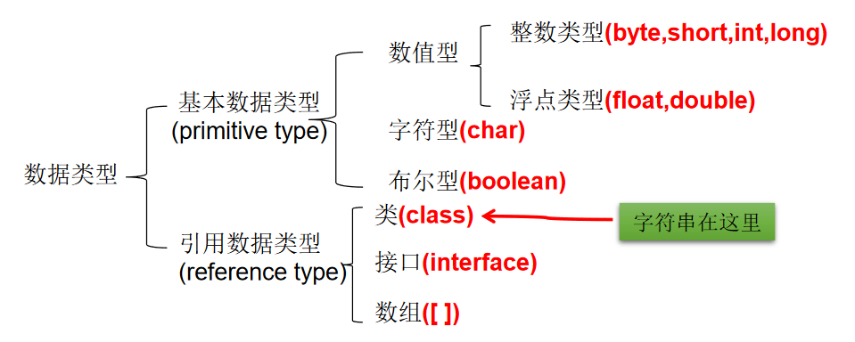
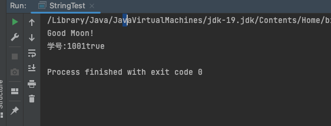
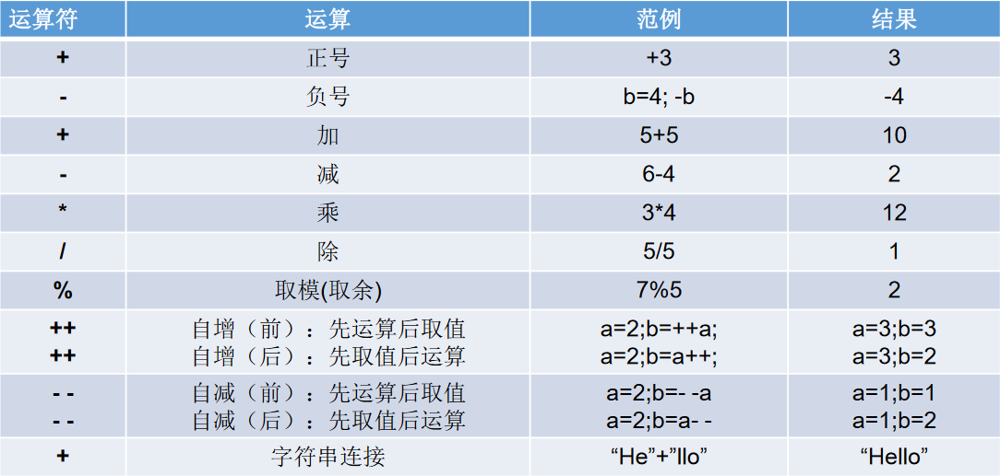
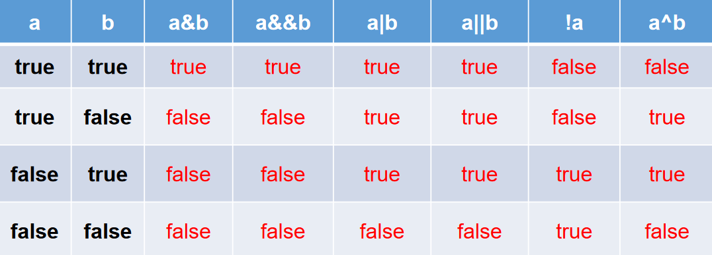
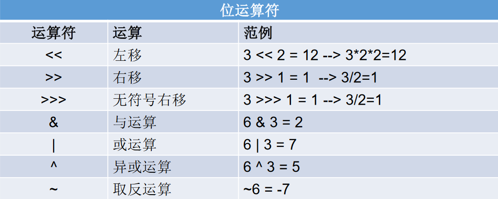
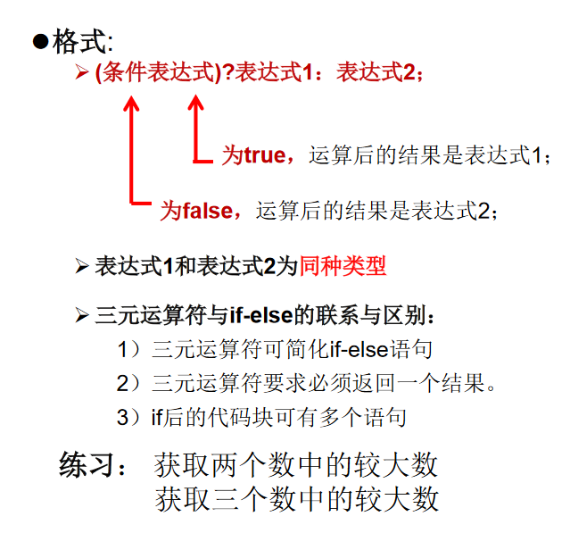
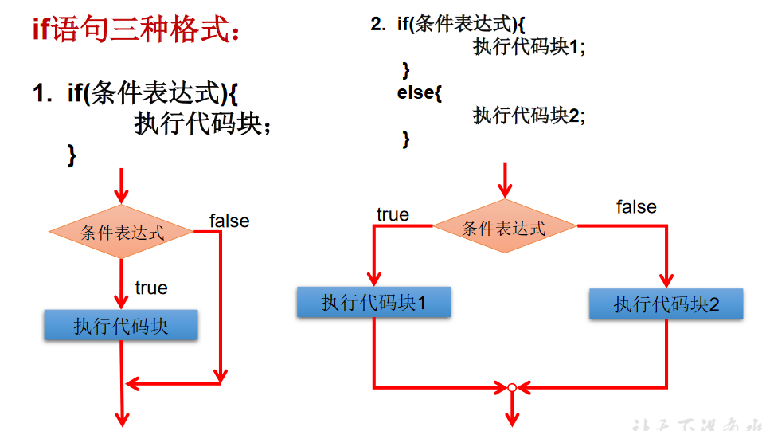
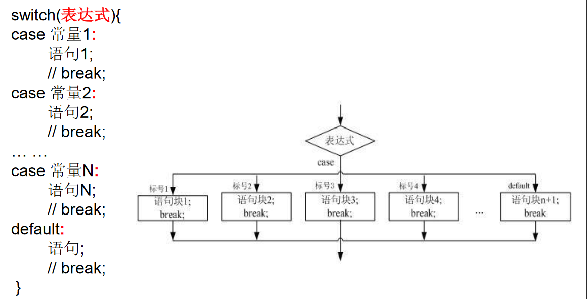

【3】 语法基础¶
关键字、变量、名称规范、数据类型¶
关键字¶
关键字均为小写


变量¶
- 在方法体外，类体内声明的变量称为成员变量。
- 在方法体内部声明的变量称为局部变量。

命名规范¶
Java 中的名称命名规范¶
- 包名：多单词组成时所有字母都小写：xxxyyyzzz
- 类名、接口名：多单词组成时，所有单词的首字母大写：XxxYyyZzz
- 变量名、方法名：多单词组成时，第一个单词首字母小写，第二个单词开始每个单词首字母大写：xxxYyyZzz（驼峰）
- 常量名：所有字母都大写。多单词时每个单词用下划线连接：XXX_YYY_ZZZ
注意点¶
- 注意 1：在起名字时，为了提高阅读性，要尽量有意义，“见名知意”。
- 注意 2：java 采用 unicode 字符集，因此标识符也可以使用汉字声明，但是不建议使用。
数据类型¶

类型转换¶
- 自动类型转换：容量小的类型自动转换为容量大的数据类型。数据类型按容量大小排序为：

- 有多种类型的数据混合运算时，系统首先自动将所有数据转换成容量最大的那种数据类型，然后再进行计算。
- byte,short, char (煤焦) 之间不会相互转换，他们三者在计算时首先转换为int类型。
- boolean 类型不能与其它数据类型运算。
- 当把任何基本数据类型的值和字符串(String)进行连接运算时(+)，基本数据类型的值将自动转化为字符串(String)类型。
/*
基本数据类型之间的运算规则：
前提：这里讨论只是7中基本数据类型变量的运算。不包含boolean类型的。
1. 自动类型提升：
当容量小的数据类型的变量和容量大的数据类型的变量做运算时，结果自动提升为容量大的数据类型。
char、byte、short-->int-->long-->float-->double
特别的：当byte、char、short三种类型的变量做运算时，结果为int类型
2. 强制类型转换：
说明：此时容量大小指的是，表示数的范围的大和小。比如：float容量要大于long的容量
*/
class VariableTest2{
public static void main(String[] args) {
byte b1 = 2;
int i1 = 129;
//编译不通过
// byte b2 = b1 + i1;
int i2 = b1 + i1;
long l1 = b1 + i1;
System.out.println(i2);
System.out.println(l1);
float f = b1 + i1;
System.out.println(f);
//***************特别的**************************
char c1 = 'a'; //97
int i3 = 10;
int i4 = c1 + i3;
System.out.println(i4);
short s2 = 10;
//编译错误
//char c3 = c1 + s2;
byte b2 = 10;
//char c3 = c1 + b2; //编译不通过
//short s3 = b2 + s2; //编译不通过
//short s4 = b1 + b2; //编译不通过
}
}
class VariableTest4{
public static void main(String[] args){
//1. 编码情况
long l = 123456;
System.out.println(l);
//编译失败：过大的整数
//long l1 = 452367894586235;
long l1 = 452367894586235L;
//**************************
//编译失败
//float f1 = 12.3;
//2. 编码情况2:
//整型变量，默认类型为int型
//浮点型变量，默认类型为double型
byte b = 12;
// byte b1 = b + 1; //编译失败
// float f1 = b + 12.3; //编译失败
}
}
引用数据类型的使用---字符串为例¶
/*
String类型变量的使用
1. String属于引用数据类型
2. 声明String类型变量时，使用一对""
3. String可以和8种基本数据类型变量做运算，且运算只能是连接运算；+
4. 运算的结果任然是String类型
*/
class StringTest{
public static void main(String[] args){
String s1 = "Good Moon!";
System.out.println(s1);
String s2 = "a";
String s3 = "";
//char c = ''; //编译不通过，不能为空
//*******************************
int number = 1001;
String numberStr = "学号:";
String info = numberStr + number; //连接运算
boolean b1 = true;
String info1 = info + true;
System.out.println(info1);
}
}

String str1 = 4; //判断对错：no
String str2 = 3.5f + “”; //判断str2对错：yes
System.out.println(str2); //输出：”3.5”
System.out.println(3+4+“Hello!”); //输出：7Hello!
System.out.println(“Hello!”+3+4); //输出：Hello!34
System.out.println(‘a’+1+“Hello!”); //输出：98Hello!
System.out.println(“Hello”+‘a’+1); //输出：Helloa1
强制类型转换¶
- 自动类型转换的逆过程，将容量大的数据类型转换为容量小的数据类型。使用时要加上强制转换符：()，但可能造成精度降低或溢出,格外要注意。
- 通常，字符串不能直接转换为基本类型，但通过基本类型对应的包装类则可以实现把字符串转换成基本类型。
- 如：String a = “43”; inti= Integer.parseInt(a);
- boolean 类型不可以转换为其它的数据类型。
short s = 5;
s = s-2; //判断：no
byte b = 3;
b = b + 4;//判断：no
b = (byte)(b+4);//判断：yes
char c = ‘a’;
int i = 5;
float d = .314F;
double result = c+i+d; //判断：yes
byte b = 5;
short s = 3;
short t = s + b;//判断：no
运算符¶





流程控制¶
分支语句¶



循环¶
For 循环¶
/*
For循环结构的使用
一、循环结构的四个要素
① 初始化条件
② 循环条件
③ 循环体
④ 迭代条件
二、for循环的结构
for(①;②;④){
③
}
*/
class ForTest{
public static void main(String[] args){
for(int i=1;i <= 5 ;i++){
System.out.println("Hello World!");
}
//练习：
int num = 1;
for(System.out.print('a');num <= 3;System.out.print('c'),num++){
System.out.print('b');
}
//遍历100以内的偶数,获取所有偶数的和,输出偶数的个数
int sum = 0; //记录所有偶数的和
int count = 0;
for(int i = 1;i <= 100;i++){
if(i %2 == 0){
System.out.println(i);
sum += i;
count++;
}
}
System.out.println("100以内的偶数的和：" + sum);
System.out.println("个数为：" + count);
}
}
While 循环¶
/*
While循环结构的使用
一、循环结构的四个要素
① 初始化条件
② 循环条件
③ 循环体
④ 迭代条件
二、while循环的结构
①初始化部分
while(②循环条件部分)｛
③循环体部分;
④迭代部分;
}
执行过程： ① - ② - ③ - ④ - ② - ③ - ④ - ... - ②
说明：
1.写while循环千万要小心不要丢了迭代条件。一旦丢了，就可能导致死循环！
2.写程序要避免死循环。
3.能用while循环的，可以用for循环，反之亦然。二者可以相互转换。
区别：for循环和while循环的初始化条件部分的作用范围不同。
算法：有限性。
*/
class WhileTest{
public static void main(String[] args){
//遍历100以内的所有偶数
int i = 1;
while(i <= 100){
if(i % 2 == 0){
System.out.println(i);
}
i++;
}
}
}
do-while 循环¶
class DoWhileTest{
public static void main(String[] args){
//遍历 100 以内的所有偶数,并计算所有偶数的和和偶数的个数
int number = 1;
int sum = 0; //记录总和
int count = 0; //记录个数
do{
if(number % 2 == 0){
System.out.println(number);
sum += number;
count++;
}
number++;
}while(number <= 100);
System.out.println("总和为：" + sum);
System.out.println("个数为：" + count);
//*********************************
int numb = 10;
while(numb > 10){
System.out.println("hello:while");
numb--;
}
int numb2 = 10;
do{
System.out.println("hello：do-while");
numb2--;
}while(numb2 > 10);
}
}
break 的使用¶
break 语句用于终止某个语句块的执行，break 语句出现在多层嵌套的语句块中时，可以通过标签指明要终止的是哪一层语句块
label1: { ......
label2: { ......
label3: { ......
break label2;
......
}
}
}
continue 的使用¶
- continue 只能使用在循环结构中
- continue 语句用于跳过其所在循环语句块的一次执行，继续下一次循环
- continue 语句出现在多层嵌套的循环语句体中时，可以通过标签指明要跳过的是哪一层循环
注意：
:::info + break只能用于switch语句和循环语句中。 + continue 只能用于循环语句中。 + 二者功能类似，但continue是终止本次循环，break是终止本层循环。 + break、continue之后不能有其他的语句，因为程序永远不会执行其后的语句。 + 标号语句必须紧接在循环的头部。标号语句不能用在非循环语句的前面。 + 很多语言都有goto语句，goto语句可以随意将控制转移到程序中的任意一条语句上，然后执行它。但使程序容易出错。Java中的break和continue是不同于goto的。
:::
数组¶
public class ArrayTest {
public static void main(String[] args) {
//1. 一维数组的声明和初始化
int num; //声明
num = 10; //初始化
int id = 1001; //声明 + 初始化
int[] ids; //声明
//1.1静态初始化:数组的初始化和数组元素的赋值操作同时进行
ids = new int[]{1001,1002,1003,1004};
//1.2动态初始化:数组的初始化和数组元素的赋值操作分开进行
String[] names = new String[5];
//错误的写法：
// int[] arr1 = new int[]; //未赋值、未指明长度
// int[5] arr2 = new int[5];
// int[] arr3 = new int[3]{1,2,3};
//也是正确的写法：
int[] arr7 = {1,2,3,5,4};//类型推断
/*总结：数组一旦初始化完成，其长度就确定了。
*/
//2.如何调用数组的指定位置的元素：通过角标的方式调用。
//数组的角标(或索引)从0开始的，到数组的长度-1结束
names[0] = "张郃";
names[1] = "王陵";
names[2] = "张学良";
names[3] = "王传志"; //charAt(0)
names[4] = "李峰";
// names[5] = "周礼"; //如果数组超过角标会通过编译，运行失败。
//3.如何获取数组的长度
//属性：length
System.out.println(names.length); //5
System.out.println(ids.length); //4
//4.如何遍历数组
// System.out.println(names[0]);
// System.out.println(names[1]);
// System.out.println(names[2]);
// System.out.println(names[3]);
// System.out.println(names[4]);
for(int i = 0;i < names.length;i++){
System.out.println(names[i]);
}
}
}
/*
* 2. 从键盘读入学生成绩，找出最高分，并输出学生成绩等级。
* 成绩>=最高分-10 等级为’A’
* 成绩>=最高分-20 等级为’B’
* 成绩>=最高分-30 等级为’C’
* 其余等级为’D’
* 提示：先读入学生人数，根据人数创建int数组，存放学生成绩。
*/
import java.util.Scanner;
public class Main {
public static void main(String[] args) {
//1.使用Scanner，读取学生的个数
Scanner scan = new Scanner(System.in);
System.out.print("请输入学生人数：");
int num = scan.nextInt(); //nextInt()是读取一行整数
//2.创建数组，存储学生成绩，动态初始化
int[] str = new int[num];
System.out.println("请输入" + num + "个学生成绩");
//3.给数组中的元素赋值
int maxnum = 0;
for(int i = 0;i < str.length;i++){
str[i] = scan.nextInt();
//4.获取数组元素中的最大值：最高分
if(maxnum < str[i]){
maxnum = str[i];
}
}
//5.根据每个学生成绩与最高分的差值，得到每个学生的等级，并输出等级和成绩
char Grade; //成绩等级
for(int i = 0;i < str.length;i++){
if(maxnum - str[i] <= 10){
Grade = 'A';
}else if(maxnum - str[i] <= 20){
Grade = 'B';
}else if(maxnum - str[i] <= 30){
Grade = 'C';
}else{
Grade = 'D';
}
System.out.println("student " + i + "score is" + str[i] +
" grade is " + Grade);
}
}
}
Java 的输入输出¶
更新: 2022-12-15 13:30:39
原文: https://www.yuque.com/xiaoshan_wgo/codingnotes/cqze7p6a3bl52ge3